유통관리사-2급 (2022-05-14 기출문제)
1과목: 유통물류일반
1. 아래 글상자에서 설명하는 조직구성원에 대한 성과평가방법으로 옳은 것은?
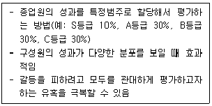
- 행동관찰척도법(BOS: behavioral observation scales)
- 단순서열법(simple ranking method)
- 쌍대비교법(paired-comparison method)
- 행위기준고과법(BARS: behaviorally anchored rating scales)
- 강제배분법(forced distribution method)
(정답률: 28%)

2. 아래 글상자의 괄호안에 들어갈 중간상이 수행하는 분류기준으로 가장 옳은 것은?
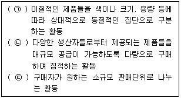
- ㉠ 분류(sorting out), ㉡ 수합(accumulation), ㉢ 분배(allocation)
- ㉠ 구색갖춤(assorting), ㉡ 분류(sorting out), ㉢ 분배(allocation)
- ㉠ 분배(allocation), ㉡ 구색갖춤(assorting), ㉢ 분류(sorting out)
- ㉠ 분배(allocation), ㉡ 수합(accumulation), ㉢ 분류(sorting out)
- ㉠ 분류(sorting out), ㉡ 구색갖춤(assorting), ㉢ 수합(accumulation)
(정답률: 50%)
3. 아래 글상자 내용은 조직의 일반원칙 중 무엇에 관한 설명인가?
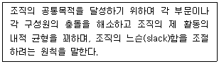
- 기능화의 원칙(principle of functionalization)
- 위양의 원칙(principle of delegation)
- 명령통일의 원칙(principle of unity of command)
- 관리한계의 원칙(principle of span of control)
- 조정의 원칙(principle of cordination)
(정답률: 50%)
4. MRO(Maintenance, Repair, Operation)의 구매 특성에 대한 설명으로 가장 옳지 않은 것은?
- 인력과 비용의 효율성을 위해 구매대행업체를 이용하기도 한다.
- 작업현장에서 임의적인 구매가 많아 이에 대한 통제가 원활하게 이루어지지 않고 있다.
- 대형장비, 기계 등 기업에서 제품을 생산하는 데 핵심적인 설비를 포함한다.
- 부정기적인 구매로 인해 수요예측에 따른 전략적 구매계획의 수립이 어렵고, 이에 따라 재고유지비용이 많이 발생한다.
- 적게는 수천가지에서 많게는 수만가지 품목을 대상으로 하기 때문에 이를 관리하기 위해 많은 비용이 발생한다.
(정답률: 12%)
5. 고객 서비스 특성에 따른 품질평가요소에 대한 설명으로 옳은 것은?
- 유형성(tangibles) - 서비스 장비 및 도구, 시설 등 물리적인 구성
- 신뢰성(reliability) - 고객의 요구에 신속하게 서비스를 제공하려는 의지
- 반응성(responsiveness) - 지식과 예절 및 신의 등 직원의 능력에 따라 가늠되는 특성
- 확신성(assurance) - 고객에 대한 서비스 제공자의 배려와 관심의 정도
- 공감성(empathy) - 계산의 정확성, 약속의 이행 등과 같이 정확하고 일관성 있는 서비스 제공
(정답률: 39%)
6. 아래 글상자에서 회계 내용과 물류원가분석의 특징으로 가장 옳지 않은 것은?
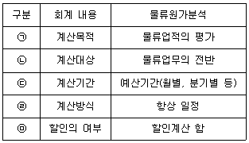
- ㉠
- ㉡
- ㉢
- ㉣
- ㉤
(정답률: 28%)
7. 재고, 운송, 고객서비스 등의 상충관계(trade-off)에 대한 설명으로 옳지 않은 것은?
- 재고수준을 낮추게 되면 보관비용이 감소되고 고객서비스 수준도 낮아진다.
- 재고 감소는 주문에 적시 대응하는 조직의 능력을 저하시킨다.
- 배달을 신속하게 해서 고객서비스 수준을 증가시키는 것은 수송비용 증가를 초래한다.
- 높은 고객서비스 수준을 지향하는 경우 재고비용과 재고운반비가 증가한다.
- 낮은 배송비용을 지향하는 것은 시간측면에서 고객서비스 수준의 증가를 가져온다.
(정답률: 39%)
8. “유통산업발전법”(시행 2021.1.1., 법률 제17761호, 2020.12.29., 타법개정) 상 유통정보화시책의 내용으로 옳지 않은 것은?
- 유통표준코드의 보급
- 유통표준전자문서의 보급
- 판매시점 정보관리시스템의 보급
- 유통산업에 종사하는 사람의 자질 향상을 위한 교육·연수
- 점포관리의 효율화를 위한 재고관리시스템·매장관리시스템 등의 보급
(정답률: 34%)
9. 소매유통회사를 중심으로 PB상품을 강화하고 있는데, 그 이유로 옳지 않은 것은?
- 수익성을 증가시키기 위해서
- 재고를 감소시키기 위해서
- 소매유통회사의 차별화 수단으로 활용하기 위해서
- 점포 이미지를 개선하는데 활용하기 위해서
- 소비자의 구매성향 변화에 적극적으로 대응하기 위해서
(정답률: 28%)
10. 기업 윤리와 관련된 설명으로 옳지 않은 것은?
- 기업은 종업원에게 단순히 돈의 대가로 노동력을 요구하는 것이 아니라, 떳떳한 구성원으로서 헌신과 열정을 이끌어 낼 수 있도록 그들에게 자긍심과 비전을 심어 주어야 한다.
- 협력사는 물품을 사오는 대상 이상의 의미를 지니는 장기적으로 협조해야 할 상생의 대상이다.
- 거래비용의 발생 원인은 기회주의, 제한된 합리성, 불확실성 등이며 교환당사자 간에 신뢰가 부족할 때 거래비용은 작아진다.
- 도덕적 해이는 도덕적 긴장감이 흐려져서 다른 사람의 이익을 희생한 대가로 자신의 이익을 추구하는 행위이다.
- 대리인비용은 주인이 대리인에게 자신을 대신하도록 할 때 발생하는 비용으로, 주인과 대리인의 이해불일치와 정보 비대칭상황 등의 요인 때문에 발생한다.
(정답률: 17%)
11. 다음 사례에서 적용된 기법이 다른 하나는?
- 유통업체의 판매, 재고데이터가 제조업체로 전달되면 제조업체가 유통업체의 물류센터로 제품을 배송
- 전자기기의 모듈을 공장에서 생산한 뒤 선박으로 미국이나 유럽으로 보내고 현지에서 각국의 니즈에 맞게 조립
- 기본적인 형태의 프린터를 생산한 후 해외주문이 오면 그 나라 언어가 기재된 외관을 조립하여 완성
- 페인트 공장에서 페인트를 만드는 대신에 페인트 가게에서 고객의 요청에 맞게 페인트와 안료비율을 결정하여 최종 페인트로 완성
- 고객들이 청바지 매장에서 신체치수를 맞춰놓고 가면, 일반 형태의 청바지를 고객치수에 맞게 바느질만 완성하여 제품을 완성시킴
(정답률: 45%)
12. 대한이는 작은 가게를 인수할 것을 고려 중이다. 아래 글상자의 내용을 이용해서 3년치 현금유입에 대한 현재가치를 계산한 것으로 옳은 것은?
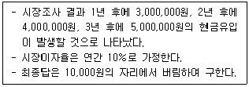
- 약 9,700,000원
- 약 10,600,000원
- 약 12,000,000원
- 약 13,200,000원
- 약 15,000,000원
(정답률: 17%)
13. 유통경로 성과를 평가하는 차원을 설명하는 아래 글상자에서 괄호 안에 들어갈 단어를 순서대로 나열한 것으로 가장 옳은 것은?
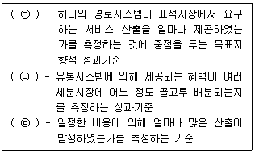
- ㉠ 형평성, ㉡ 효율성, ㉢ 효과성
- ㉠ 효과성, ㉡ 형평성, ㉢ 효율성
- ㉠ 형평성, ㉡ 효과성, ㉢ 효율성
- ㉠ 효과성, ㉡ 효율성, ㉢ 형평성
- ㉠ 효율성, ㉡ 형평성, ㉢ 효과성
(정답률: 34%)
14. 유통경로를 설계할 때 유통경로 흐름과 소요되는 각종비용의 예를 짝지은 것으로 가장 옳지 않은 것은?
- 물적유통 - 보관 및 배달 관련 비용
- 촉진 – 광고, 홍보, 인적판매 비용
- 협상 – 시간 및 법적 비용
- 재무 – 보험 및 사후관리 비용
- 위험 – 가격보증, 품질보증 관련 비용
(정답률: 23%)
15. 범위의 경제와 관련된 설명으로 가장 옳지 않은 것은?
- 한 기업이 다양한 제품을 동시에 생산함으로써 비용상 우위를 누리는 것을 말한다.
- 하나의 생산과정에서 두 개 이상의 생산물이 생산되는 경우에 발생한다.
- 기업은 생산량을 증대하여 단위당 비용의 하락을 통해 이익을 얻을 수 있다.
- 한 제품을 생산하는 과정에서 부산물이 생기는 경우에 나타날 수 있다.
- 제조업체에게 비용절감 효과를 가져올 수 있다.
(정답률: 28%)
16. 유통경영의 외부환경을 분석하기 위해 포터의 산업분석을 활용할 경우에 대한 설명으로 가장 옳지 않은 것은?
- 기존 경쟁자들 간의 경쟁 정도를 확인해야 한다.
- 공급자의 협상능력이 클수록 산업전반의 수익률이 증가하여 시장 매력도가 높아진다.
- 생산자입장에서 소매상의 힘이 커질수록 가격결정에서 불리하다.
- 외부환경이 미치는 영향은 기업에 따라 기회 또는 위협으로 작용한다.
- 대체재의 유무에 따라 산업의 수익률이 달라진다.
(정답률: 28%)
17. 치열해지는 기업간 경쟁에 따른 전통적 비즈니스에서 글로벌 비즈니스로의 변화로 가장 옳지 않은 것은?
- 고객만족에서 고객을 즐겁게 하는 것으로 변화
- 이익지향에서 이익 및 사회 지향으로 변화
- 선행적 윤리에서 사후 비판에 대응하는 반응적 윤리로 변화
- 제품 지향에서 품질 및 서비스 지향으로 변화
- 경영자에 대한 초점에서 고객에 대한 초점으로 변화
(정답률: 45%)
18. 재무, 생산소요계획, 인적자원, 주문충족 등 기업의 전반적인 업무 프로세스를 통합·관리하여 정보를 공유함으로써 효율적인 업무처리가 가능하게 하는 경영기법으로 가장 옳은 것은?
- 리엔지니어링
- 식스시그마
- 아웃소싱
- 벤치마킹
- 전사적자원관리
(정답률: 45%)
19. 6시그마(6 Sigma)를 추진할 경우 각 단계별 설명으로 가장 옳지 않은 것은?
- 정의 - 고객의 요구사항과 CTQ(Critical To Quality)를 결정한다.
- 측정 - 프로세스 측정 방법을 결정한다.
- 분석 - 결함의 발생 원인을 규명한다.
- 개선 - 제품이나 서비스의 공정능력을 규명한다.
- 관리 - 지속적인 관리를 실시한다.
(정답률: 34%)
20. 수요예측을 위해 사용하는 각종 기법 중 그 성격이 다른 하나는?
- 판매원 추정법 - 판매원들이 수요추정치를 작성하게 하고 이를 근거로 예측하는 기법
- 시장조사법 - 인터뷰, 설문지, 면접법 등으로 수집한 시장 자료를 이용하여 예측하는 기법
- 경영자판단법 - 경영자 집단의 의견, 경험을 요약하여 예측하는 기법
- 시계열 분석 - 종속변수의 과거 패턴을 이용해서 예측하는 기법
- 델파이법 - 익명의 전문가 집단으로부터 합의를 도출하여 예측하는 기법
(정답률: 17%)
21. 다양한 재고와 관련된 설명으로 가장 옳지 않은 것은?
- 성수기와 비수기의 수요공급차이에 대응하기 위한 재고는 예상재고이다.
- 총재고 중에서 로트의 크기에 따라 직접적으로 변하는 부분은 리드타임재고이다.
- 안전재고는 각종 불확실성에 대처하기 위해 보유하는 여분의 재고이다.
- 주기재고의 경우 주문 사이의 시간이 길수록 재고량이 증가한다.
- 수송재고는 자재흐름체계 내의 한 지점에서 다른 지점으로 이동중인 재고를 말한다.
(정답률: 23%)
22. 식품매장을 중심으로 주목받고 있는 그로서란트(grocerant)에 대한 설명으로 가장 옳지 않은 것은?
- 매장에서 판매하는 식재료를 이용해 고객에게 메뉴를 제안하고 즉시 제공하는 장점이 있다.
- 식재료 쇼핑에 외식 기능을 더해 소매와 외식의 경계를 없앤 서비스이다.
- 제철 식재료와 추천상품을 제안하는 등 다양한 방식으로 운영할 수 있다.
- 그로서리(grocery)와 레스토랑(restaurant)의 합성어이다.
- 오프라인과 경쟁하기 위한 온라인 쇼핑몰의 차별화 요소로 각광받고 있다.
(정답률: 50%)
23. 아래 글상자의 사례에 해당하는 유통경영전략으로 가장 옳은 것은?
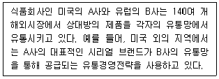
- 복합경로마케팅전략
- 제품개발전략
- 인수합병전략
- 전략적경로제휴전략
- 다각화전략
(정답률: 50%)
24. 아래 글상자에서 설명하고 있는 리더십 유형으로 가장 옳은 것은?
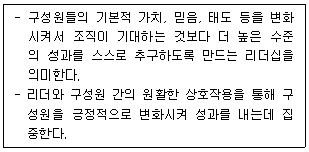
- 거래적 리더십
- 변혁적 리더십
- 상황적 리더십
- 지시형 리더십
- 위임형 리더십
(정답률: 45%)
25. 장소의 편의성이 높게 요구되는 담배, 음료, 과자류 등과 같은 품목에 일반적으로 이용되는 유통채널의 유형으로 가장 옳은 것은?
- 전속적 유통채널(exclusive distribution channel)
- 독립적 유통채널(independent distribution channel)
- 선택적 유통채널(selective distribution channel)
- 집중적 유통채널(intensive distribution channel)
- 대리점 유통채널(agent distribution channel)
(정답률: 28%)
2과목: 상권분석
26. 권리금에 대한 설명으로 가장 옳지 않은 것은?
- 때로는 권리금이 보증금보다 많은 경우도 있다.
- 시설 및 상가의 위치, 영업상의 노하우 등과 같은 다양한 유무형의 재산적 가치에 대한 양도 또는 사용료로 지급하는 것이다.
- 권리금을 일정 기간안에 회복할 수 있는 수익성이 확보될 수 있는지를 검토해야 한다.
- 신축건물인 경우 주변 상권의 강점을 반영하는 바닥권리금의 형태로 나타나기도 한다.
- 임차인이 점포의 소유주에게 제공하는 추가적인 비용으로 보증금의 일부이다.
(정답률: 34%)
27. 상권 유형별 개념과 일반적 특징을 설명한 내용으로서 가장 옳은 것은?
- 역세권상권은 지하철이나 철도역을 중심으로 형성되는 지상과 지하의 입체적 상권으로서, 저밀도 개발이 이루어지는 경우가 많다.
- 부도심상권의 주요 소비자는 점포 인근의 거주자들이어서, 생활밀착형 업종의 점포들이 입지하는 경향이 있다.
- 부도심상권은 보통 간선도로의 결절점이나 역세권을 중심으로 형성되는바, 도시 전체의 소비자를 유인한다.
- 도심상권은 중심업무지구(CBD)를 포함하며, 상권의 범위가 넓고 소비자들의 체류시간이 길다.
- 아파트상권은 고정고객의 비중이 높아 안정적인 수요확보가 가능하고, 외부고객을 유치하기 쉬워서 상권확대가능성이 높다.
(정답률: 17%)
28. 소매점의 입지 선정을 위한 공간분석의 논리적 순서로서 가장 옳은 것은?
- 개별점포(site)분석 - 지구상권(district area)분석 - 광역지역(general area)분석
- 광역지역(general area)분석 – 개별점포(site)분석 - 지구상권(district area)분석
- 지구상권(district area)분석 - 광역지역(general area) 분석 - 개별점포(site)분석
- 광역지역(general area)분석 - 지구상권(district area) 분석 - 개별점포(site)분석
- 개별점포(site)분석 - 광역지역(general area)분석 - 지구상권(district area)분석
(정답률: 17%)
29. 아래 글상자의 왼쪽에는 다양한 상권분석 기법들의 특성이 정리되어 있다. 이들 특성과 관련된 상권분석 기법들을 순서대로 정리한 것으로 가장 옳은 것은?
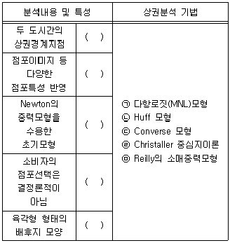
- ㉠, ㉤, ㉡, ㉢, ㉣
- ㉢, ㉣, ㉤, ㉡, ㉠
- ㉤, ㉡, ㉠, ㉣, ㉢
- ㉣, ㉤, ㉢, ㉠, ㉡
- ㉢, ㉠, ㉤, ㉡, ㉣
(정답률: 17%)
30. 비교적 넓은 공간인 도시, 구, 동 등의 상권분석 상황에서 특정지역의 개략적인 수요를 측정하기 위해 사용되고 있는 구매력지수(BPI: Buying Power Index)를 계산하는 과정에서 필요한 자료로 가장 옳지 않은 것은?
- 부분 지역들의 인구수(population)
- 전체 지역의 인구수(population)
- 부분 지역들의 소매점면적(sales space)
- 부분 지역들의 소매매출액(retail sales)
- 부분 지역들의 가처분소득(effective buying income)
(정답률: 12%)
31. 아동용 장난감 소매업체가 출점할 입지를 선정하기 위해 새로운 지역의 수요를 분석할 때 고려해야 할 요인으로 가장 옳지 않은 것은?
- 인구 증감
- 인구 구성
- 가구 규모
- 가구 소득
- 가족 생애주기
(정답률: 12%)
32. 입지를 선정할 때 취급상품의 물류비용을 고려할 필요성이 가장 낮은 도매상 유형으로 옳은 것은?
- 직송도매상(drop shipper)
- 판매대리점(selling agents)
- 제조업체 판매사무소(manufacturer's branches)
- 일반잡화도매상(general merchandise wholesaler)
- 전문도매상(specialty wholesaler)
(정답률: 17%)
33. 가장 다양한 업태의 소매점포를 입주시키는 쇼핑센터 유형으로 옳은 것은?
- 파워 쇼핑센터
- 아웃렛 쇼핑센터
- 쇼핑몰 지역센터
- 네이버후드 쇼핑센터
- 패션/전문품 쇼핑센터
(정답률: 17%)
34. 일정 요건을 갖춘 판매시설에 대한 교통영향평가의 실시를 정한 법률로서 옳은 것은?
- 도로법(법률 제17893호, 2021. 1. 12., 타법개정)
- 유통산업발전법(법률 제17761호, 2020. 12. 29., 타법개정)
- 도시교통정비 촉진법(법률 제17871호, 2021. 1. 5.,일부개정)
- 지속가능 교통물류 발전법(법률 제18563호, 2021. 12. 7., 일부개정)
- 국토의 계획 및 이용에 관한 법률(법률 제17893호,2021. 1. 12., 타법개정)
(정답률: 23%)
35. 입지 분석에 사용되는 각종 이론들에 대한 설명 중 가장 옳지 않은 것은?
- 공간상호작용모델은 소비자 구매행동의 결정요인에 대한 이해를 통해 입지를 결정한다.
- 다중회귀분석은 점포성과에 영향을 주는 요소의 절대적 중요성을 회귀계수로 나타낸다.
- 유추법은 유사점포에 대한 분석을 통해 입지후보지의 예상매출을 추정한다.
- 체크리스트법은 특정입지의 매출규모와 입지비용에 영향을 줄 요인들을 파악하고 유효성을 평가한다.
- 입지분석이론들은 소매점에 대한 소비자 점포선택 행동과 소매상권의 크기를 설명한다.
(정답률: 17%)
36. 점포 개점을 위한 경쟁점포의 분석에 관한 설명으로 가장 옳지 않은 것은?
- 1차 상권 및 2차 상권 내의 주요 경쟁업체를 분석하고 필요할 경우 3차 상권의 경쟁업체도 분석한다.
- 점포 개설을 준비하고 있는 잠재적인 경쟁업체가 있다면 조사에 포함시킨다.
- 목적에 맞는 효과적인 분석을 위해 동일 업태의 점포에 한정해서 분석한다.
- 경쟁점포의 상품 구색 및 배치에 대해서도 분석한다.
- 상권의 계층 구조를 고려하여 분석한다.
(정답률: 23%)
37. 주거지역과 상업지역에서 업종을 변경하거나 점포를 확장하려 할 경우 용도변경 신청을 해야 하는 경우가 있다. 이때 하수도법, 주차장법 등 매우 많은 법률의 적용을 다르게 받게 되어 업종변경이나 확장이 어려울 수도 있다. 이와 관련된 행정 처리 절차로서 가장 옳은 것은?
- 용도 변경 신청 – 신고필증 교부 – 공사 착수 – 건축물대장 변경 - 사용 승인
- 용도 변경 신청 – 신고필증 교부 – 건축물대장 변경 - 공사 착수 – 사용 승인
- 용도 변경 신청 – 사용 승인 - 신고필증 교부 – 공사 착수 – 건축물대장 변경
- 용도 변경 신청 – 신고필증 교부 – 건축물대장 변경 - 사용 승인 - 공사 착수
- 용도 변경 신청 – 신고필증 교부 – 공사 착수 – 사용 승인 – 건축물대장 변경
(정답률: 17%)
38. 상권에 대한 일반적인 설명으로 가장 옳지 않은 것은?
- 상권의 범위는 점포의 업종이나 업태와 관련이 있다.
- 소매상권의 크기는 판매하는 상품의 종류에 따라 달라진다.
- 상권은 행정구역과 일치하지 않는 경우가 많다.
- 상권의 범위는 고정적이지 않고 변화하므로 유동적이다.
- 점포가 소재하는 위치적, 물리적인 조건을 의미한다.
(정답률: 23%)
39. 아래 글상자에 기술된 절차에 따르는 상권분석기법을 널리 알린 사람으로 가장 옳은 것은?
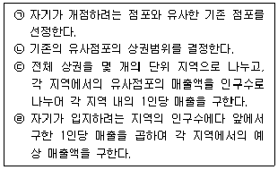
- 레일리(W. Reilly)
- 컨버스(P. Converse)
- 허프(D. Huff)
- 넬슨(R. L. Nelson)
- 애플바움(W. Applebaum)
(정답률: 6%)
40. 입지의 시계성(視界性)은 점포의 매출과 밀접한 관련이 있다. 시계성에 관한 설명으로 가장 옳지 않은 것은?
- 입지의 시계성은 기점, 대상, 거리, 주체의 4가지 관점에서 평가한다.
- 시계성이 양호한 정도는 어디에서 보이는가에 따라 달라진다.
- 점포의 위치와 함께 간판의 위치와 형태도 시계성확보에 중요하다.
- 차량으로부터의 시계성은 외측(아웃커브)보다 내측(인커브)의 경우가 더 좋다.
- 차량의 속도가 빨라질수록 내측(인커브) 점포의 시계성은 더 나빠진다.
(정답률: 17%)
41. 사람들은 점포가 눈 앞에 보여도 간선도로를 횡단해야 하는 경우 그 점포에 접근하지 않으려는 경향을 보인다. 이런 현상에 대한 설명으로 가장 옳은 것은?
- 최단거리로 목적지까지 가고자 하는 최단거리 추구의 원칙
- 득실을 따져 득이 되는 쪽을 선택하려는 보증실현의 원칙
- 위험하거나 잘 모르는 길을 지나지 않으려는 안전추구의 원칙
- 사람이 운집한 곳을 선호하는 인간집합의 원칙
- 동선을 미리 예상하고 진행하지만 상황에 맞추어 적응하는 목적추구의 원칙
(정답률: 28%)
42. 입지선정을 위해서는 도시공간구조 상에서의 동선(動線)에 대한 이해가 필요하다. 동선에 대한 아래 글상자의 설명 중에서 옳지 않은 설명들만을 바르게 짝지은 것은?
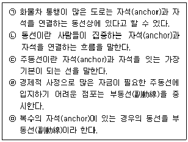
- ㉠ - ㉡
- ㉠ - ㉤
- ㉡ - ㉣
- ㉢ - ㉣
- ㉢ - ㉤
(정답률: 17%)
43. 아래 글상자의 업종들에 적합한 점포의 입지조건을 공간균배의 원리에 의해 구분할 때 일반적으로 가장 적합한 것은?
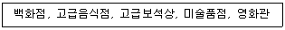
- 집심(集心)성 점포
- 집재(集在)성 점포
- 산재(散在)성 점포
- 국부(局部)성 집중성 점포
- 국부(局部)성 집재성 점포
(정답률: 6%)
44. 소매점의 입지와 상권에 대한 설명으로 가장 옳은 것은?
- 입지 평가에는 점포의 층수, 주차장, 교통망, 주변 거주인구 등을 이용하고, 상권 평가에는 점포의 면적, 주변유동인구, 경쟁점포의 수 등의 항목을 활용한다.
- 상권을 강화한다는 것은 점포가 더 유리한 조건을 갖출 수 있도록 점포의 속성들을 개선하는 것을 의미한다.
- 상권은 점포를 경영하기 위해 선택한 장소 또는 그 장소의 부지와 점포 주변의 위치적 조건을 의미한다.
- 입지는 점포를 이용하는 소비자들이 분포하는 공간적 범위 또는 점포의 매출이 발생하는 지역 범위를 의미한다.
- 상권은 일정한 공간적 범위(boundary)로 표현되고 입지는 일정한 위치를 나타내는 주소나 좌표를 가지는 점(point)으로 표시된다.
(정답률: 17%)
45. 아래 글상자에서처럼 월매출액을 추정하려 할 때 괄호 안에 들어갈 용어로 가장 옳은 것은?
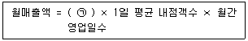
- 상권내 점포점유율
- 회전율
- 내점율
- 실구매율
- 객단가
(정답률: 28%)
3과목: 유통마케팅
46. 고객별 수익과 비용을 고려한 고객관계관리에서 개별고객의 수익성을 평가하는 기준 중 하나인 고객평생가치(CLV: customer lifetime value)를 추정하는데 필요한 정보로서 가장 옳지 않은 것은?
- 충성도
- 고객확보비용
- 평균총마진
- 평균구매금액
- 관계 유지 기간
(정답률: 6%)
47. 서비스 실패의 회복 과정에서 고객이 지각하는 다양한 유형의 공정성은 고객 만족에 영향을 미친다. 종업원 행동의 영향을 받는 공정성 유형으로서 가장 옳은 것은?
- 법적 공정성
- 절차적 공정성
- 산출적 공정성
- 결과적 공정성
- 상호작용적 공정성
(정답률: 23%)
48. CRM의 적용을 통해 수행성과를 개선할 수 있는 분야로서 가장 옳지 않은 것은?
- 고객이탈에 대한 조기경보시스템 운영
- 다양한 접점의 고객정보의 수집 및 분석
- 유통기업 재무 활동의 자동화 및 효율화
- 영업 인력의 영업활동 및 관리의 자동화
- 서비스 차별화를 위한 표적고객의 계층화
(정답률: 23%)
49. 소비자 판매 촉진(consumer sales promotion)에 대한 설명으로 옳지 않은 것은?
- 소비자의 직접구매를 유도하는데 효과적이다.
- 판매촉진은 가격판촉과 비가격판촉으로 나눌 수 있다.
- 판매촉진은 광고에 비해 단기적인 성과를 얻을 때 유용하다.
- 판매촉진의 예로는 할인, 쿠폰, 선물, 시제품 배포 등이 있다.
- 소비자뿐만 아니라 기업과 관련된 이해관계자들을 대상으로 한다.
(정답률: 39%)
50. 매장외관(exterior) 관리에 대한 설명으로 가장 옳지 않은 것은?
- 매장의 외관은 기업의 이미지에 매우 중요한 영향을 미치므로 사전에 면밀히 계획되어야 한다.
- 매장의 외관은 매장의 이미지를 상징적으로 표현할 수 있도록 디자인되어야 한다.
- 매장 입구는 입구의 수, 형태, 그리고 통로를 고려해서 설계해야 한다.
- 매장의 외관은 플래노그램(planogram)을 통해 효과성을 평가해야 한다.
- 매장의 외관을 꾸미는 데 있어서 중요한 목적은 고객의 관심을 유발하는 것이다.
(정답률: 34%)
51. 아래 글상자에서 설명하는 용어로 옳은 것은?
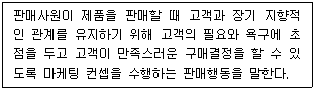
- 고객지향적 판매행동
- 제품지향적 판매행동
- 판매지향적 판매행동
- 관리지향적 판매행동
- 시스템지향적 판매행동
(정답률: 39%)
52. EAN(유럽상품)코드에 대한 설명으로 가장 옳지 않은 것은?
- 소매점 POS시스템과 연동되어 판매시점관리가 가능하다.
- 첫째 자리는 국가코드로 대한민국의 경우 880이다.
- 두번째 자리는 제조업체 코드로 생산자가 고유번호를 부여한다.
- 체크숫자는 마지막 한자리로 판독오류 방지를 위해 만들어진 코드이다.
- 국가, 제조업체, 품목, 체크숫자로 구성되어 있다.
(정답률: 23%)
53. 아래 글상자는 유통경로상 갈등을 초래하는 원인을 설명한 것이다. 이러한 갈등의 원인으로 가장 옳은 것은?
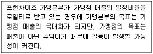
- 추구하는 목표의 불일치
- 역할에 대한 인식 불일치
- 현실에 대한 인식 불일치
- 품질요구의 불일치
- 경로파워 불일치
(정답률: 28%)
54. 아래 글상자는 표적시장 범위에 따른 표적시장 선정 전략에 대한 내용이다. 설명이 옳은 것만을 모두 나열한 것은?
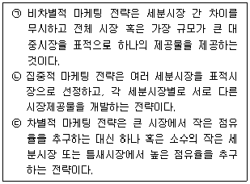
- ㉠
- ㉠, ㉡
- ㉡, ㉢
- ㉠, ㉢
- ㉠, ㉡, ㉢
(정답률: 6%)
55. 점포의 환경관리에 대한 설명으로 가장 옳지 않은 것은?
- 매장 내 농축산품 작업장 바닥높이는 매장보다 높게 하여 물이 바닥에 고이지 않게 한다.
- 화장실은 물을 사용하는 공간으로 확실한 방수공사가 필요하며 주기적으로 관리한다.
- 주차장은 도보나 자전거로 내점하는 보행자와 가능한 한 겹치지 않도록 동선을 설계한다.
- 매장진열의 효율성을 위해 매장 집기 번호대로 창고 보관 상품을 보관한다.
- 간판, 포스터, 게시판, POP 등의 진열이 고객의 동선을 방해하지 않도록 관리한다.
(정답률: 34%)
56. 아래 글상자의 괄호 안에 들어갈 용어로 가장 옳은 것은?
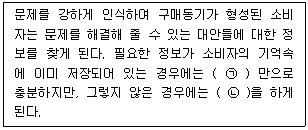
- ㉠외적 탐색, ㉡내적 탐색
- ㉠단기 기억, ㉡장기 기억
- ㉠내적 탐색, ㉡외적 탐색
- ㉠장기 기억, ㉡내적 탐색
- ㉠단기 기억, ㉡외적 탐색
(정답률: 23%)
57. 제조업자가 중간상들과의 거래에서 흔히 사용하는 가격할인의 형태에 대한 설명으로 가장 옳은 것은?
- 현금할인 - 중간상이 일시에 대량구매를 하는 경우 구매량에 따라 주어지는 현금할인
- 거래할인 - 중간상이 제조업자를 위한 지역광고 및 판촉을 실시할 경우 이를 지원하기 위한 보조금 지급
- 판매촉진지원금 - 제조업자의 업무를 대신 수행한 것에 대한 보상으로 경비의 일부를 제조업자가 부담
- 수량할인 - 제품을 현금으로 구매하거나 대금을 만기일 전에 지불하는 경우 판매대금의 일부를 할인
- 계절할인 - 제품판매에 계절성이 있는 경우 비수기에 제품을 구매하는 중간상에게 제공되는 할인
(정답률: 17%)
58. 상품연출이라고도 불리는 상품진열이 가지는 고객 서비스 관점의 의미로 가장 옳지 않은 것은?
- 진열은 빠른 시간에 상품을 찾을 수 있게 해주는 시간절약 서비스이다.
- 진열은 상품선택 시 다른 상품과의 비교를 쉽게 해주는 비교서비스이다.
- 진열은 상품종류를 쉽게 식별하게 해주는 식별서비스이다.
- 진열은 상품이 파손 없이 안전하게 보관되도록 하는 보관서비스이다.
- 진열은 무언의 커뮤니케이션으로 상품정보를 제공해주는 정보서비스이다.
(정답률: 28%)
59. 면도기의 가격은 낮게 책정하고 면도날의 가격은 비싸게 책정한다든지, 프린터의 가격은 낮은 마진을 적용하고 프린터 카트리지나 다른 소모품의 가격은 매우 높은 마진을 적용하는 등의 가격결정 방식으로 가장 옳은 것은?
- 사양제품 가격책정(optional product pricing)
- 제품라인 가격책정(product line pricing)
- 종속제품 가격책정(captive product pricing)
- 부산물 가격책정(by-product pricing)
- 이중부분 가격결정(two-part pricing)
(정답률: 28%)
60. 레이아웃의 영역에 해당하지 않는 것은?
- 상품 및 집기의 배치와 공간의 결정
- 집기 내 상품 배치와 진열 양의 결정
- 출입구와 연계된 주통로의 배치와 공간 결정
- 상품품목을 구분한 보조통로의 배치와 공간 결정
- 상품 계산대의 배치와 공간결정
(정답률: 12%)
61. 아래 글상자에서 RFM기법에 대한 설명으로 옳은 것을 모두 나열한 것은?
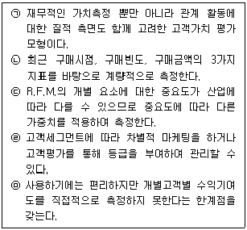
- ㉠, ㉡, ㉤
- ㉠, ㉢, ㉣
- ㉠, ㉡, ㉢, ㉣
- ㉠, ㉡, ㉣, ㉤
- ㉠, ㉡, ㉢, ㉣, ㉤
(정답률: 23%)
62. 마케팅통제(marketing control)에 대한 설명으로 가장 옳지 않은 것은?
- 마케팅목표를 달성하기 위해 마케팅전략과 계획을 마케 활동으로 전환시키는 과정이다.
- 마케팅전략 및 계획의 실행결과를 평가하고, 마케팅목표가 성취될 수 있도록 시정조치하는 것이다.
- 마케팅계획의 실행과정에서 예상치 않은 일들이 발생하기 때문에 지속적인 마케팅통제가 필요하다.
- 운영통제(operating control)는 연간 마케팅계획에 대비한 실제성과를 지속적으로 확인하고 필요할 때마다 시정조치하는 것이다.
- 전략통제(strategic control)는 기업의 기본전략들이 시장기회에 잘 부응하는지를 검토하는 것이다.
(정답률: 12%)
63. 쇼루밍(showrooming) 소비자의 특징에 대한 설명으로 가장 옳은 것은?
- 주된 구매동기는 제품을 즉시 수령하고, 반품을 더 쉽게 하기 위함이다.
- 온라인에서만 구매하는 온라인 집중형 소비자이다.
- 오프라인 점포에서 제품을 살펴본 후 온라인에서 저렴한 가격으로 구입하려 한다.
- 오프라인 상점에서만 직접 경험하고 구매하려는 오프라인 집중형 소비자이다.
- 온라인에서 쇼핑을 즐기지만 정작 구매는 오프라인에서 한다.
(정답률: 17%)
64. 설문조사를 위한 표본 추출 방법 중 확률적 표본추출에 해당하는 것은?
- 편의 표본 추출
- 단순 무작위 표본 추출
- 판단 표본 추출
- 할당 표본 추출
- 자발적 표본 추출
(정답률: 17%)
65. 유통마케팅 목표달성을 위해 자금을 효율적으로 지출하는지를 확인할 수 있는 유통마케팅 성과평가 분석으로 가장 옳은 것은?
- 시장점유율 분석
- 자금유지율 분석
- 고객만족도 분석
- ROI 분석
- 경로기여도 분석
(정답률: 17%)
66. 소매 마케팅전략 수립을 위해 필요한 소매믹스(retailing mix)로 옳지 않은 것은?
- 소매가격 책정
- 점포입지 선정
- 유통정보 관리
- 소매 커뮤니케이션
- 취급상품 결정
(정답률: 17%)
67. 아래 글상자의 사례를 통해 계산한 A상품의 연간 상품 회전율(rate of stock turnover)로 옳은 것은?
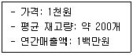
- 5회
- 10회
- 13회
- 15회
- 20회
(정답률: 34%)
68. 유통목표설정에 대한 설명으로 가장 옳지 않은 것은?
- 유통경로 상에서 소비자들이 기대하는 서비스 수준에 근거하여 유통목표를 설정한다.
- 유통목표는 포괄적인 유통관리를 위해 개념적으로 서술되어야 한다.
- 기업 전체의 장기목표를 반영하여 유통목표를 설정해야 한다.
- 유통목표는 언제까지 달성하겠다는 시한을 구체적으로 명시해야 한다.
- 유통목표는 목표달성도를 확인하기 위해 측정 가능해야 한다.
(정답률: 23%)
69. 선발주자의 이점 또는 선점우위효과(first mover advantage)로 가장 옳지 않은 것은?
- 경험곡선효과
- 규모의 경제효과
- 기술적 불확실성 제거효과
- 시장선점에 따른 진입장벽 구축효과
- 전환비용에 의한 진입장벽 구축효과
(정답률: 23%)
70. 아래 글상자에서 설명하는 벤더를 일컫는 말로 가장 옳은 것은?
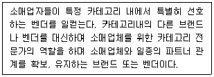
- 1차 벤더(primary vendor)
- 리딩 벤더(leading vendor)
- 스마트 벤더(smart vendor)
- 카테고리 캡틴(category captain)
- 카테고리 플래너(category planner)
(정답률: 6%)
4과목: 유통정보
71. 효과적인 공급사슬관리를 위해 활용할 수 있는 정보기술로 가장 옳지 않은 것은?
- EDI
- POS
- PBES(Private Branch Exchange Systems)
- CDS(Cross Docking Systems)
- RFID(Radio-Frequency IDentification)
(정답률: 28%)
72. 산업혁명 발전과정을 설명한 것으로 가장 옳은 것은?
- 1차 산업혁명 시기에는 전자기기의 활용을 통한 업무생산성 개선이 이루어졌다.
- 2차 산업혁명 시기에는 전력을 활용해 대량생산 체계를 구축하기 시작하였다.
- 3차 산업혁명 시기에는 사물인터넷과 인공지능 기술이 업무처리에 활용되기 시작하였다.
- 4차 산업혁명 시기에는 업무처리에 인터넷 활용이 이루어지기 시작하였다.
- 2차 산업혁명 초기에는 정보통신기술을 통한 데이터수집과 이를 분석한 업무처리가 이루어지기 시작하였다.
(정답률: 28%)
73. 공급사슬관리의 변화 방향에 대한 설명으로 가장 옳지 않은 것은?
- 재고 중시에서 정보 중시 방향으로 변화하고 있다.
- 공급자 중심에서 고객 중심으로 변화하고 있다.
- 거래 중시에서 관계 중시 방향으로 변화하고 있다.
- 기능 중시에서 프로세스 중시 방향으로 변화하고 있다.
- 풀(pull) 관행에서 푸시(push) 관행으로 변화하고 있다.
(정답률: 39%)
74. 아래 글상자에서 제시하는 지식관리 시스템 구현 절차를 순서대로 바르게 나열한 것으로 가장 옳은 것은?
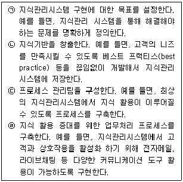
- ㉠-㉡-㉢-㉣
- ㉣-㉢-㉡-㉠
- ㉢-㉣-㉡-㉠
- ㉠-㉡-㉣-㉢
- ㉠-㉢-㉡-㉣
(정답률: 23%)
75. RFID 태그에 대한 설명으로 가장 옳지 않은 것은?
- RFID 태그는 QR 코드에 비해 근거리 접촉으로 정보를 확보할 수 있다.
- RFID 태그는 동시 복수 인증이 가능하다.
- 배터리를 내재한 RFID 태그는 그렇지 않은 태그에 비해 성능이 우월하다.
- RFID 태그 가격이 지속적으로 하락하고 있어 기업의 유통 및 물류 부분에서의 활용 가능성이 높아지고 있다.
- RFID 태그는 바코드와 비교할 때, 오염에 대한 내구성이 강하다.
(정답률: 6%)
76. 사물인터넷 통신기술을 활용해 마케팅을 하고자 할 때, 아래 글상자의 설명에 해당하는 기술로 가장 옳은 것은?
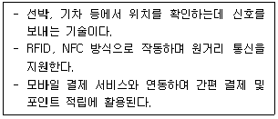
- 비콘(Beacon)
- 와이파이(Wi-Fi)
- 지웨이브(Z-Wave)
- 지그비(ZigBee)
- 울트라와이드밴드(Ultra Wide Band)
(정답률: 23%)
77. 데이터 마이그레이션(migration) 절차에 대한 설명으로 가장 옳지 않은 것은?
- 데이터 운반은 외부로부터 유입된 데이터를 기업 표준으로 변환하는 작업이다.
- 데이터 정제는 데이터를 ERP시스템에서 사용할 수 있도록 수정하는 작업이다.
- 데이터 수집은 새로운 데이터를 디지털 포맷으로 변환하기 위해 모으는 작업이다.
- 데이터 추출은 기존의 레거시 시스템과 데이터베이스에서 데이터를 꺼내는 작업이다.
- 데이터 정제는 린 코드번호, 의미없는 데이터, 데이터 중복 및 데이터 오기(misspellings) 등 부정확한 데이터를 올바르게 고치는 작업이다.
(정답률: 17%)
78. 공급자재고관리(VMI)의 목적으로 가장 옳지 않은 것은?
- 비즈니스 가치 증가
- 고객서비스 향상
- 재고 정확성의 제고
- 재고회전율 저하
- 공급자와 구매자의 공급사슬 운영의 원활화
(정답률: 28%)
79. 아래 글상자의 ㉠에 들어갈 기술로 가장 옳은 것은?
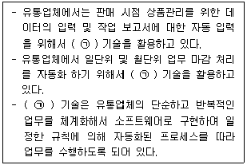
- IPA(Intelligent Process Automation)
- ETL(Extraction Transformation Loading)
- RPA(Robotic Process Automation)
- ETT(Extraction Transformation Tracking)
- VRC(Virtual Reality Construction)
(정답률: 12%)
80. 거래 단품을 중복없이 식별하는 역할을 하는 GTIN(국제거래단품식별코드) 및 GTIN 관련 데이터는 대개 고정데이터이지만, 때로는 기본 식별 데이터 외에 더 세부적이고 상세한 상품 정보를 제공해야 할 때도 있다. 이 경우 사용되는 가변 데이터로 가장 옳지 않은 것은?
- 유통기한
- 일련번호
- 로트(lot) 번호
- 배치(batch) 번호
- 성분 및 영양정보
(정답률: 23%)
81. 아래 글상자의 ㉠에 들어갈 용어로 가장 옳은 것은?
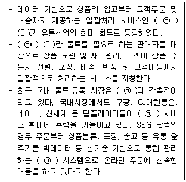
- 풀필먼트
- 로지틱스
- 데이터마이닝
- 풀서포트
- 풀브라우징
(정답률: 23%)
82. 기업의 강점, 약점과 같은 내부 역량과 기회, 위협과 같은 외부 가능성 사이의 적합성을 평가하기 위해 사용되는 도구로 분석범위를 내부 뿐만 아니라 외부까지 확장시켜 보다 넓은 상황 분석을 할 경우 활용되는 전략적 분석 도구로 가장 옳은 것은?
- PEST
- ETRIP
- STEEP
- 4FACTOR
- SWOT
(정답률: 45%)
83. A유통은 입고부터 판매까지 제품의 정보를 관리하고자 정보시스템을 구축하려고 결정하였다. A유통은 전문업체인 B사를 선정하여 사업기간 6개월로 계약을 체결하였다. B사는 A유통의 정보시스템 구축을 위해 일련의 활동계획을 수립하였다. 사업 착수 후 분석단계에 포함되는 활동으로 가장 옳은 것은?
- 데이터베이스 설계
- 단위테스트 수행
- 사용자매뉴얼 작성
- 요구사항 정의
- 인수테스트 수행
(정답률: 23%)
84. 지역별 점포를 운영하고 있는 유통기업이 사용하는 판매시점관리를 지원하는 POS시스템에서 획득한 데이터의 관리 및 활용에 대한 설명으로 가장 옳지 않은 것은?
- 고객이 제품을 구매한 정보를 관리한다.
- 상품 판매동향을 분석하여 인기제품, 비인기제품을 파악할 수 있다.
- 타 점포와의 상품 판매동향 비교·분석에 활용할 수 있다.
- 개인의 구매실적, 구매성향 등에 관한 정보를 관리한다.
- 기회손실(자점취급, 비취급)에 대한 분석은 어렵다.
(정답률: 34%)
85. 아래 글상자의 내용이 설명하고 있는 ㉠에 들어갈 용어로 가장 옳은 것은?
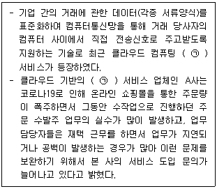
- Beacon
- XML
- O2O
- EDI
- SaaS
(정답률: 12%)
86. A사는 전자상거래 서비스를 위해 기존의 시스템을 고도화하였다. 웹서비스 뿐만아니라 모바일 서비스도 구축하였다. 모바일 채널은 웹으로 개발하였다. 모바일 웹에 대한 설명으로 가장 옳지 않은 것은?
- 모바일 기기에 관계없이 모바일 웹사이트에 접속이 가능하다.
- 모바일웹은 컨텐츠나 디자인을 변경할 때 웹 표준에 맞춰 개발하기 때문에 OS별로 수정할 필요가 없다.
- 단말기의 카메라, GPS 또는 각종 프로세싱 능력을 활용한 서비스 이용시 앱보다 훨씬 효과적이다.
- 모바일웹은 데스크톱용 웹 브라우저와 기능적으로 동일한 수준의 브라우저 설치와 실행이 가능하다.
- URL을 통해 접속한다.
(정답률: 6%)
87. 인터넷 기반의 전자상거래를 위협하는 요소와 그 설명이 가장 옳지 않은 것은?
- 바이러스 - 자체 복제되며, 특정 이벤트로 트리거 되어 컴퓨터를 감염시키도록 설계된 컴퓨터 프로그램
- 트로이 목마 - 해킹 기능을 가지고 있어 인터넷을 통해 감염된 컴퓨터의 정보를 외부로 유출하는 것이 특징
- 에드웨어 - 사용자의 동의 없이 시스템에 설치되어서 무단으로 사용자의 파일을 모두 암호화하여 인질로 잡고 금전을 요구하는 악성 프로그램
- 웜 - 자체적으로 실행되면서 다른 컴퓨터에 전파가 가능한 프로그램
- 스파이웨어 - 이용자의 동의 없이 또는 이용자를 속여 설치되어 이용자 몰래 정보를 빼내거나 시스템 및 정상프로그램의 설정을 변경 또는 운영을 방해하는 등의 악성행위를 하는 프로그램
(정답률: 34%)
88. QR코드를 활용하는 간편결제 방식에 대한 설명으로 가장 옳지 않은 것은?
- QR코드는 다양한 방향에서 스캔·인식이 가능하고 일부 훼손되더라도 오류를 정정하여 정상적으로 인식할 수 있는 장점이 있다.
- 소비자가 모바일 앱으로 가맹점에 부착된 QR코드를 스캔하여 결제처리하는 방식을 고정형이라 한다.
- 결제 앱을 통해 소비자가 QR코드를 생성하고, 가맹점에서 QR리더기(결제 앱 또는 POS단말기)로 읽어서 결제처리하는 것을 변동형이라 한다.
- 고정형 QR은 가맹점 탈퇴·폐업 즉시 QR코드를 파기한 후 가맹점 관리자에게 신고해야 한다.
- 변동형 QR은 개인이 별도의 위·변조 방지 특수필름 부착이나 잠금장치 설치 등의 조치를 취해야 한다.
(정답률: 12%)
89. 데이터 내에 포함된 개인 정보를 식별하기 어렵게 하는 조치를 비식별화라 한다. 이에 대한 설명으로 가장 옳지 않은 것은?
- 정형데이터는 개인정보 비식별 조치 가이드라인의 대상데이터이다.
- 비식별화를 위해 개인이 식별가능한 데이터를 삭제처리하는 방법이 있다.
- 성별, 생년월일, 국적, 고향, 거주지 등 개인특성에 대한 정보는 비식별화 대상이다.
- 혈액형, 신장, 몸무게, 허리둘레, 진료내역 등 신체 특성에 대한 정보는 비식별화 대상이다.
- JSON, XML 포맷의 반정형데이터는 개인정보 비식별화 대상이 아니다.
(정답률: 6%)
90. 데이터, 지식, 정보에 대한 설명으로 가장 옳지 않은 것은?
- 일반적으로 데이터에서 정보를 추출하고, 정보에서 지식을 추출한다.
- 1차 데이터는 이미 생성된 데이터를 의미하고, 2차 데이터는 특정한 목적을 달성하기 위해 직접적으로 고객으로부터 수집한 데이터를 의미한다.
- 일반적으로 정보는 이전에 수집한 데이터를 재가공한 특성을 갖고 있다.
- 암묵적 지식은 명확하게 체계화하기 어려운 지식을 의미한다.
- 지식창출 프로세스에는 공동화, 표출화, 연결화, 내면화가 포함된다.
(정답률: 0%)